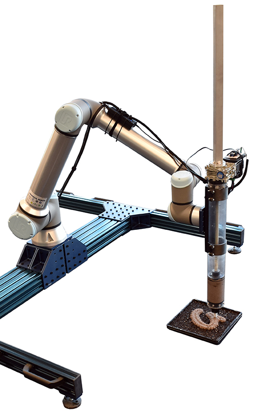

Hye Yeon Nam
Ec(h)o
2023, Living Typography + Interactive Sound Instrument

Ec(h)o is a robotically seeded living interface for collective music making. It is composed of a microcontroller, capacitive touch sensors, plants, and planting media. The interface is grown from robotically planted seeds in computationally generated planting patterns. The living matters, the plants and soil, act as a sensor network. Touching a zone of the living interface will play a sample from a sound palette of environmental recordings. People can touch, feel, listen to, and experience Ec(h)o while they appreciate the beauty of typography and nature.
Collaborators: Hye Yeon Nam, Brendan Harmon, Ka Hei Cheng
Award
2023 April, TDC Awards
Paper
2022 May, CHI Interactivity, New Orleans Convention Center